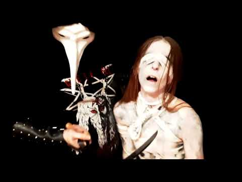

Editorial preview. Photography opens its own page; other sections remain provisional.
Photography

A place for images, sequences and the details between them. Places, nights, portraits and fragments gathered into a personal archive.
MEDIA

A space for moving images — music, travels and moments worth remembering.
Music
Laura’s playlist / YouTube
Eternal Abyss
Songs gathered by Laura and shared through her Beacons page. A listening collection, without a preference ranking.

Reading room / Demonstration
Ten Records
That Remain
Ten entries in black metal and dark music, arranged as an editorial layout study. A place to test the rhythm of a list and the space around each record.
Sample ranking and notes. These are not Laura’s personal selections.
Explore the Top 10Objects
Things that carry
a little time.
A quiet index of objects, textures and small curiosities. Each entry can hold an image, a short description and a note on why it belongs here.
Provisional section text. No personal history or provenance has been assigned.

Media

Watch on YouTubeMusic video / Censored version
Illum Adora — Profanation on Command
A music video in which Laura participated in 2021, shared on her Beacons page.
Personal channel / YouTube